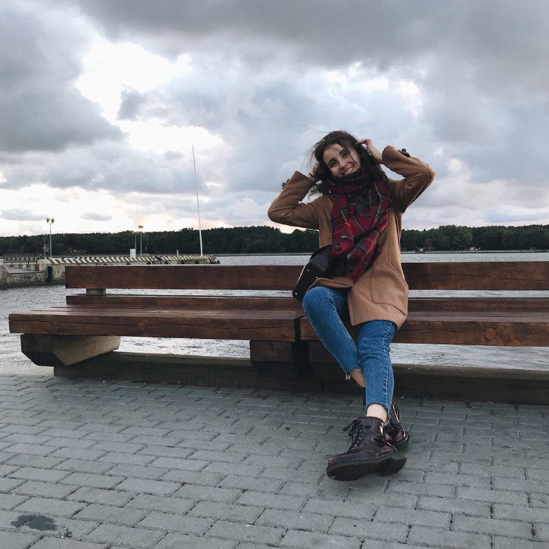

Nice to meet you!

"Two years ago I bought the first fountain pen, and since then my passion for calligraphy motivated me for self-development. The journey was hard at first, there were so many failures(and tears to be honest) which required a lot of commitment and free time. However, I never stopped trying and it lead me to success. Consistency and pratice are the two main advices I give to people who want to become better at any sort of creative artwork.
Nowadays calligraphy and handcrafting are not only enjoyable and calming hobbies, but also my work. It has always been my dream to love what I do, and I can totally say that I'm living it."
My name is Yelyzaveta Mateshuk.
- I am from the beautiful city of Zaporizhzhya, Ukraine.
- Left a piece of my heart in Haven KS, USA.
- 2021 LCC International University Contemporary Communications Graduate.
- Currently I live in Klaipeda, Lithuania.